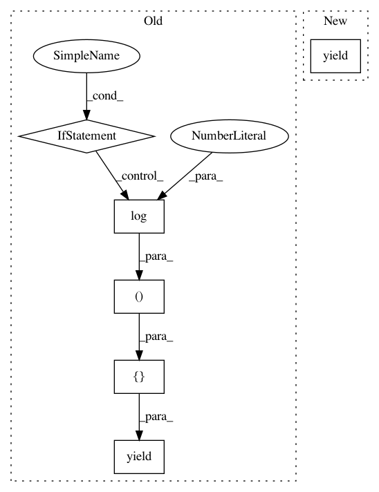

52796475005cb8828c73dfbb97ba9820667c9d41,cnvlib/coverage.py,,interval_coverages_count,#Any#Any#Any#Any#,71
Before Change
for count, depth in pool.map(region_depth_count, (
(bamfile, chrom, start, end, min_mapq)
for _chrom, start, end, gene in subregions.coords["gene"])):
yield [count,
(chrom, start, end, gene,
math.log(depth, 2) if depth else NULL_LOG2_COVERAGE, depth)]
def region_depth_count(bamfile, chrom, start, end, min_mapq):
Calculate depth of a region via pysam count.
After Change
for _c, start, end, gene in subregions.coords(["gene"]):
count, row = region_depth_count(bamfile, chrom, start, end,
gene, min_mapq)
yield [count, row]
else:
with futures.ProcessPoolExecutor(procs) as pool:
// TODO - chunk the regions -- very slow otherwise
args_iter = ((bam_fname, chrom, start, end, gene, min_mapq)
In pattern: SUPERPATTERN
Frequency: 4
Non-data size: 6
Instances
Project Name: etal/cnvkit
Commit Name: 52796475005cb8828c73dfbb97ba9820667c9d41
Time: 2016-08-28
Author: eric.talevich@gmail.com
File Name: cnvlib/coverage.py
Class Name:
Method Name: interval_coverages_count
Project Name: etal/cnvkit
Commit Name: 52796475005cb8828c73dfbb97ba9820667c9d41
Time: 2016-08-28
Author: eric.talevich@gmail.com
File Name: cnvlib/coverage.py
Class Name:
Method Name: interval_coverages_pileup
Project Name: etal/cnvkit
Commit Name: 48672d0b94cbee281f5a9d0a9601998dc1792f57
Time: 2016-08-11
Author: eric.talevich@gmail.com
File Name: cnvlib/coverage.py
Class Name:
Method Name: interval_coverages_pileup
Project Name: etal/cnvkit
Commit Name: 48672d0b94cbee281f5a9d0a9601998dc1792f57
Time: 2016-08-11
Author: eric.talevich@gmail.com
File Name: cnvlib/coverage.py
Class Name:
Method Name: interval_coverages_count